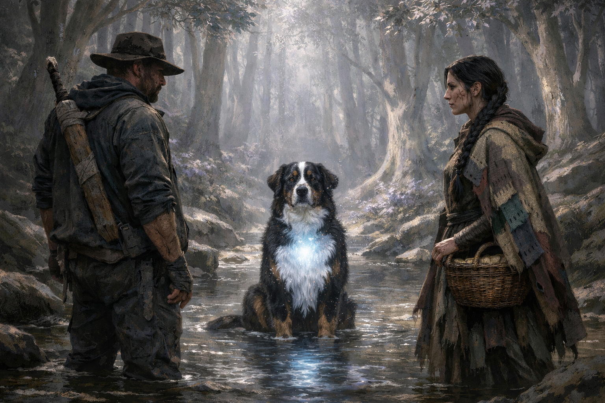

Chapter 37 — What She Saw

We walked until my legs stopped shaking. Then we walked further.
Elira led, picking a path through the silverleaf that left no trail worth following. She moved with a purpose I hadn't seen before, not the lazy amble of a trader but the quick, clean stride of someone who'd outrun trouble more than once. Every few minutes she paused, head tilted, listening. Then on again without a word.
Merlin kept pace at my side. His glow had settled to a low blue-white in his chest, cold and steady, like starlight held inside fur. He no longer limped. That, at least, was something. Two weeks since the summoning, and whatever had been spent in the circle was finally knitting itself back together. He moved with his old confidence now, ears high, nose working the breeze. Only his eyes betrayed the change: watchful in a way they hadn't been at home, scanning every shadow as though he'd learned what shadows could hold.
I carried the sword across my back and the club in my hand. The club was heavier now. Not in weight. In what it had done.
I tried not to think about it. My body wanted to process the fight the way it always processed stress: catalogue the events, assign them to categories, extract the learning, move on. It was the consultant's reflex. Every crisis is a case study if you frame it correctly. Every failure is a lessons-learned exercise with a slide deck at the end.
But there was no slide deck for killing a man with a stick. No framework for the way his jaw had given under the wood. No matrix that accounted for the sound he'd made.
The forest swallowed us. The silverleaf canopy closed overhead, filtering the light to a pale, shifting silver. No birdsong here, just the creak of vast branches and the whisper of leaves that moved without wind. The air tasted of sap and cold stone.
An hour passed. Maybe two. Elira stopped at a stream, crouching to fill a waterskin from her basket. She passed it to me without meeting my eyes.
I drank, passed it back. Merlin lapped at the stream, then sat, tongue dripping, watching us both with the patience of something that understood more than it could say.
The silence between Elira and me had weight. It had been building since the fight, thickening with every step. She'd seen the Sight. She'd watched two men stumble as though the ground had shifted under them, watched me strike with a precision that didn't match my frame or my supposed amnesia. She'd seen Merlin's chest pulse with light.
She was working it out. I could feel it the way I'd felt clients working toward a conclusion in a boardroom: the slight tension in the jaw, the questions held behind the eyes, the calculation running just beneath the surface.
I waited. In my old life, the trick was always to let the other person arrive at the question themselves. Push too early and they resist. Wait, and they commit.
"You don't have amnesia," she said.
Not a question. A conclusion.
I looked at her across the stream. Her braid was loose, strands of dark hair stuck to her cheek with sweat. The cut from the scout's blow had dried to a thin red line. Her eyes were steady, not angry, but done with pretending.
"No," I said.
She nodded once, as if confirming something she'd suspected since the ravine. "The way you moved back there. When they had you pinned. Something happened. The ground shifted, or they shifted, or you did something that pulled them loose. That wasn't muscle."
"No," I said again.
"And Merlin. He glows. He's been glowing more each day, and you haven't said a word about it, which means you already know."
"Yes."
She let the silence stretch. The stream gurgled between us. Merlin yawned.
"So." She folded her arms across her knees. "Who are you? Not where you're from, not what master you serve. Who are you, and what did the Caller see when he looked at you?"
I could have lied again. Built another layer of misdirection, the way you'd restructure a failing pitch: new angle, same product. But I was tired of the performance. The amnesia had bought us time, and the time was spent.
"My name is Sebastian," I said. "I'm not from this world. I was pulled here by a summoning circle. The people who brought me called me the Warden of Systems."
Her face didn't change. She'd been ready for something strange, and strange was what she got. But her hands tightened on her knees.
"Go on."
"Where I come from, there's no magic. No Callers, no Weavers, no relics. I was a man who helped organisations solve problems. Read systems, find leverage, fix what's broken. I wasn't anyone. I had a dog, a farm, and a job that took me to seventy countries where I sat in expensive rooms and told powerful people things they didn't want to hear."
Merlin's ears pricked at the word "dog" as though offended by the simplification.
"And then they pulled you here," Elira said quietly.
"Through fire. With Merlin on my shoulder. Into a chamber full of men in robes who treated me like an answer to a prayer. The Caller came for me within days. He knew what they'd summoned. I think he's known for longer than any of them."
She was silent for a long time. The forest creaked above us. A glass-winged insect drifted past, its wings catching the silver light.
"The Sight," she said at last. "The threads you pull. That's what the old temples describe. The First Weavers could see the bones of the world, the patterns that hold things together. Stone, wind, flesh, power. They didn't command it like a weapon. They read it, like a language."
"I can't read it," I said. "It comes in flashes. Only when someone I care about is in danger. Only when I'm desperate. And then it vanishes and I'm blind again."
"That's how it starts," she murmured. "If the stories are true."
If the stories are true. There it was again: the narrative structure pressing in from every side. The reluctant hero, the hidden power, the wise guide explaining the rules of magic. I could map this scene to a dozen books I'd read, a hundred films I'd watched. The consultant in me wanted to draw the org chart: protagonist here, mentor here, antagonist here, ancient prophecy somewhere in the middle holding the whole thing together.
But the man who'd just killed two people with a stick couldn't afford to be clever about it. Stories had rules. This place had consequences.
"Elira," I said. "You've been travelling these roads for years. You know the Caller's network, his scouts, his supply lines. You know the traders and the camps and the places where his grip is weakest. I don't. I have a power I can barely use, a sword I found in a ruin, and a dog who glows."
Merlin huffed at that, as if to say: I do considerably more than glow.
"What I'm saying is: I need help. Not charity. Not a guide who's humouring a lost man. A partner who knows what she's getting into."
Her eyes held mine. I'd made pitches like this before. To boards, to investors, to rooms full of people who held the future of a company in their hands. The trick was the same every time: lay out the truth, acknowledge the risk, and trust the other person to make a rational decision.
Except that in those rooms, the worst outcome was a lost contract. Here, the worst outcome was a shallow grave in the silverleaf.
"You're asking me to side against the Caller," she said. "Not in whispers. Not in the way traders grumble over their cups. You're asking me to stand beside a man who tore walls from stone, who carries a relic the Caller would burn a forest to reclaim, and whose dog—" she glanced at Merlin, who wagged his tail once, unhelpfully— "does things that dogs are not supposed to do."
"Yes."
She let out a breath. Not a sigh. Something sharper. The sound of a decision being made.
"The Caller took my sister three years ago," she said. "Tithe. She was seventeen. I've been walking these roads ever since, selling herbs, keeping my head down, waiting for something to change. Nothing ever did."
She stood, brushing dirt from her knees, and looked east through the silver canopy. Her jaw was set. The cut on her cheek had stopped bleeding.
"There's a settlement four days east. Thornfield. It sits at the edge of the Caller's reach, a trading post where his scouts don't go easily. We can rest there. Resupply. And maybe find people who've been waiting as long as I have for a reason to stop running."
She turned back to me. "I'm not doing this because you glow, or because you pulled a sword from a fairy tale. I'm doing it because you vomited after you killed those men. That tells me more than any title."
I didn't know what to say to that. So I said nothing.
Merlin rose, shook himself, and padded to Elira's side. She scratched behind his ears. His chest pulsed once — a clean white-blue — and she smiled for the first time since the fight.
"Four days," she said. "Try not to pull any more walls down before we get there."
She set off along the stream, braid swinging, basket hitched to her shoulder. Merlin followed, tail high.
I stood a moment longer, the weight of the sword on my back, the club in my hand, Tov's token pressing against my thigh. Three people and a dog who glowed, walking toward a place I'd never heard of, carrying a truth I still couldn't fully believe.
The consultant in me would have called it a terrible pitch. Understaffed, underfunded, no clear deliverable, facing an entrenched incumbent with total market dominance.
But I'd seen worse odds in boardrooms. And in boardrooms, nobody's dog could bend light.
I followed them into the silver trees.